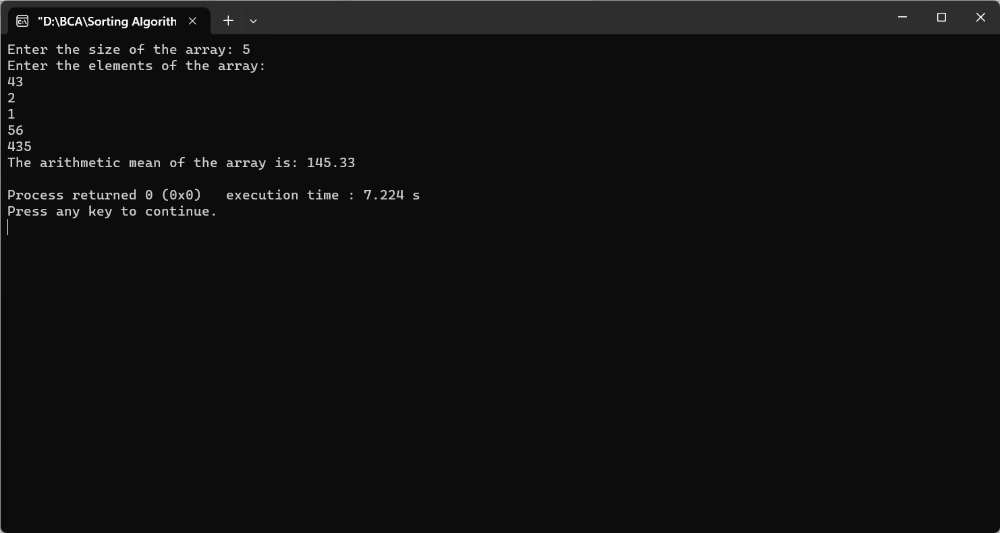

FIND THE ARITHMETIC MEAN OF AN INTEGER ARRAY USING RECURSION
#include
float calculateMean(int arr[], int size) {
if (size == 0) {
return 0;
}
return (arr[size - 1] + size * calculateMean(arr, size - 1)) / (size + 0.0);
}
int main() {
int size;
printf("Enter the size of the array: ");
scanf("%d", &size);
if (size <= 0) {
printf("Array size should be a positive integer.\n");
return 1;
}
int array[size];
printf("Enter the elements of the array:\n");
for (int i = 0; i < size; i++) {
scanf("%d", &array[i]);
}
float mean = calculateMean(array, size);
printf("The arithmetic mean of the array is: %.2f\n", mean);
return 0;
}
